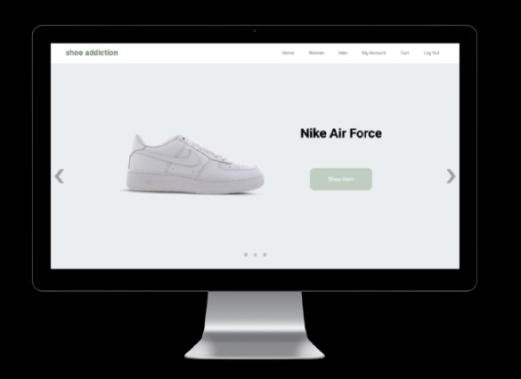
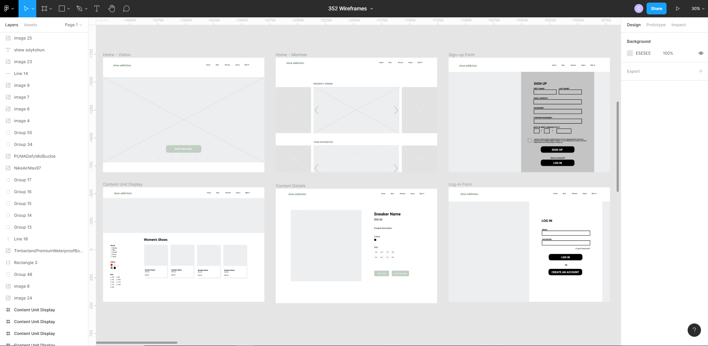
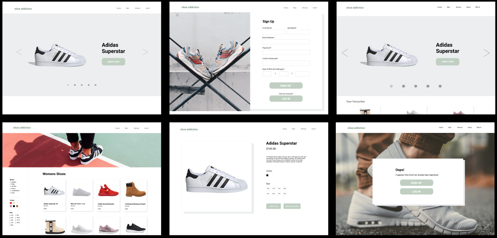
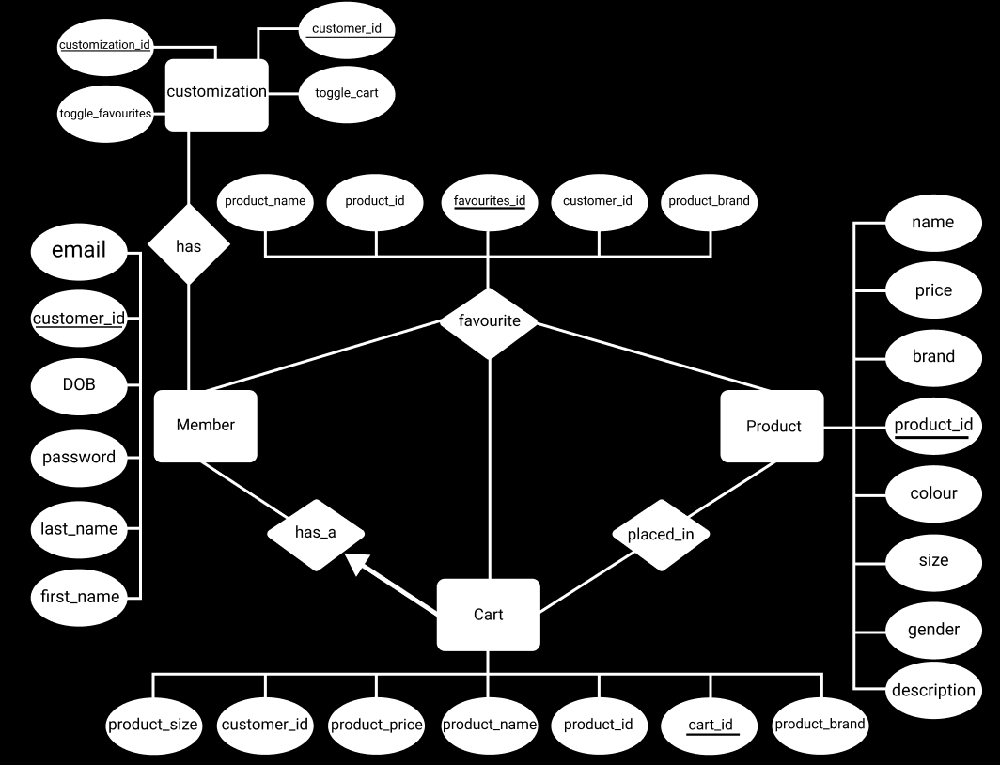
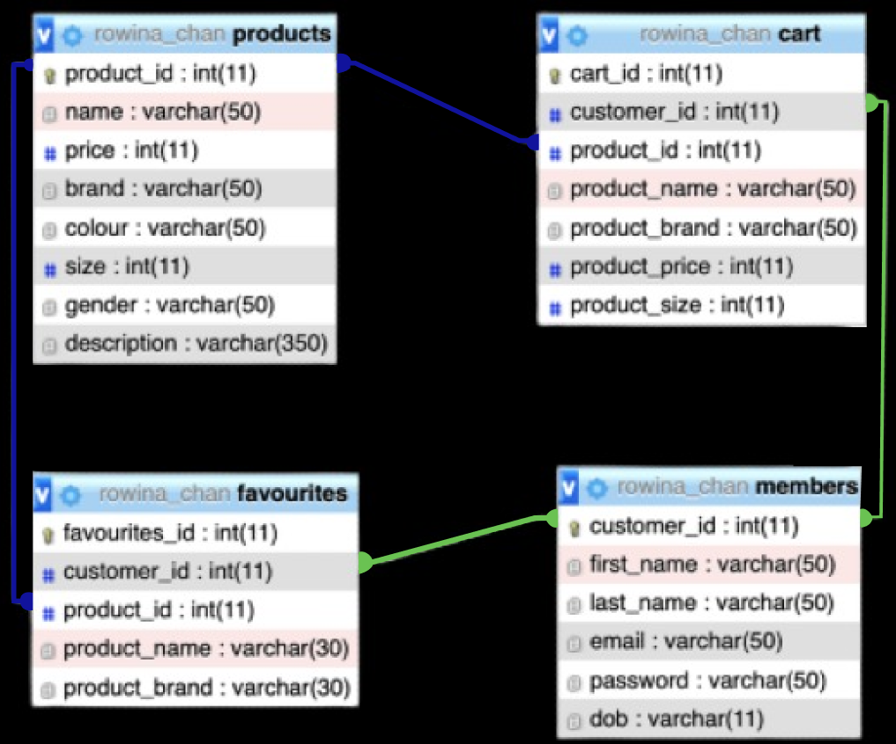
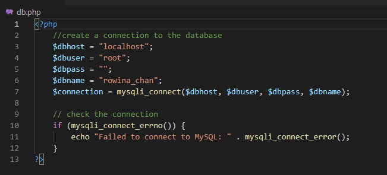

Description
Shoe Addiction is a shoe selling website I created with two other students for an academic project over the span of 11 weeks. The goal was to combine front end design with back end
functionality for e-commerces websites where users could interact with elements of the website which in shoe addictions case is the products available on the website.
Users also have the ability with the website to request and filter through stored data. We also provided personalization through the website's sign up
feature which stored user credentials so that they could have access to products they have added to their carts or favorited.
Team & Roles
Carissa Shum
UX/UI Designer Front/Back end Developer
Rowina Chan
UX/UI Designer Front/Back end Developer
Chamira Perera
UX/UI Designer Front/Back end Developer
Tools Used
Figma
HTML/CSS/JS
PHP
MySQL
Duration
11 weeks
(SEPT - DEC 2020)
Front-End Web Development
We started designing the website layout in Figma where we also chose the ideas for which pages we were going to have on the site. I also designed the layouts for a user with an account to the website
since there would be additional features that those users would have access to. We also decided on the colour palette at the same time and with colours that were more toned down and
pastel. Once the layout was designed in Figma it, I began coding the front end using HTML/CSS and Javascript. I implemented different website interface interactions so users
could hover over different buttons and see small animations. Lastly, we chose pictures of shoes and used them for banners, stock images, etc. with a carousel cycling
through images and links to products on the website.

Figma Wireframes and colour palette chosen for site
Completed Front-End Design

Finished Front End Interface
Back-End Web Development
Database Design
When designing the database for the website for the all the information that was required to be stored for the project, I assisted in making an ER
Diagram for a visualization of what information was needed to be stored in order to complete different functions on the website. Information
that we decided to have the database store includes user account information (names, usernames, passwords,etc), products and product destails, and lastly products stored
in the users cart. Once we planned out all the main entities of the website's datanase with the ER diagram, it was then created using MySQLite and could be
customized so users could update or delete certain rows of the database that have been stored such as the cart section of the site.


ER Diagram and Database Design for Website Entities
Back-End Implementation
How Back-End Development Effects Front-End Interface. Video Credit: Carissa Shum
Once the front end was mostly complete the next goal was working with new coding languages being taught in the course which were MySQLite,
PHP, AJAX, and JSON. MySQL was used to handle database control and PHP was used to connect the database to the HTML to be controlled by the
user. This is how information such as user accounts could be accessed as well as products that have been favorited by the user as well as
products placed in the cart. AJAX and JSON were used to asynchronously update the website without having to reload the entire page. This was
shown in the product filtering portion of the website that allowed visitors to cycle through the products based on their specifications.
Challenges
The main challenges I had with the project was learning new coding languages and being able to implement them in a way that is unique to the website being
created. This was the first time I used PHP, AJAX, and JSON to create a site like shoe addiction, and learning how to connect the site to the database,
then being able to retreive data from the database and linking it with the buttons and filters of the front end interface was quite challenging and took a lot
of effort to learn over a certain amount of time.

Code for Connecting Website with Database
Final Product
Learning these new coding languages then applying these skills into the project was quite challenging but rewarding because use these skills
to work with other web applications that handle forms and databases. The one thing that I would focus on more would be better understanding how to use JSON and AJAX
more effiniciently. Below is a video going over giving a walkthrough of the website and how to use different features of the website and the changes made when logging onto as a
member.
Walkthrough of Completed Website. Video Credit: Carissa Shum